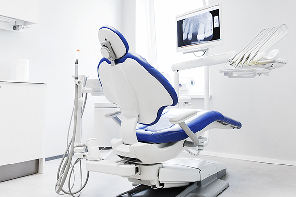

치과는 너무 겁이 나요.
대부분의 사람들은 치과를 싫어합니다. 이가 아파도 무섭다는 생각에 치과에 가기를 두려워하여 차일피일 미루게 되기 일수입니다. 치과에 들어서자마자 지독한 치과 냄새에 윙윙 돌아가는 엔진 소리, 보기만 해도 끔직한 기구들, 울고있는 아이라도 있으면 다시 발걸음을 돌리고 싶은 것이 사실입니다.
치과 공포심 없애기
-
치아가 좋아질 거라는 생각 마음 속에 새기기
-
치과 의사에게 치료의 느낌과 공포에 대해 솔직하게 이야기 하기
-
치료 전 카페인이 든 음식 피하기
-
치과 의사와의 신뢰감 갖기
우선, 순간적인 공포와 통증을 참아내면 앞으로 치아가 좋아질 거라는 생각을 마음속에 새깁니다. 그리고 '나는 이러저러한 것이 너무 싫고 아프다' 등 치료도중에도 아프고 힘든 것이 있다면 손을 들거나 눈빛으로 신호를 보내 정확한 느낌을 전달합니다.
무엇보다도 중요한 것은 의사와 환자간의 신뢰 입니다. 치과의사는 아프게 하는 사람이 아니라 아픔을 덜어 주는 사람이라는 믿음을 가져야 합니다.